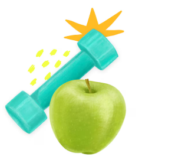
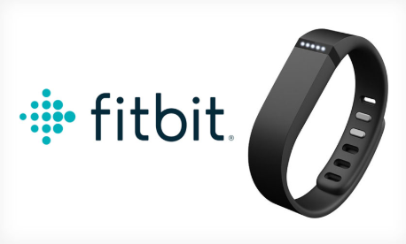
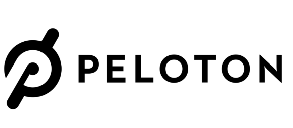

Health & Fitness technology has come a long way. We used to lift rocks and cure diseases with holy water, and now we have complex machinery and advanced biology to help us live our best lives. This wesbite showcases health & fitness tech that already exists, and some new inventions I have created.



These 3 inventions do a great job at showcasing the current possibilities for H&F technology, from less advanced to most advanced. BUt in order to create things truly unique, we must look to the future...
My first idea for a future invention is an app called RemoteRace. This app would let you race anyone online. Here's an accordion list of features it has.
My next idea is a peice of exercise equipment called the Smartbell. A very futuristic dumbbell that can morph into different types of weights, track your strength, and use futuristic magnetic technology to fly and apply pressure from every direction. Below is a 3D model I made using A-Frame to showcase what the smartbell could look like.